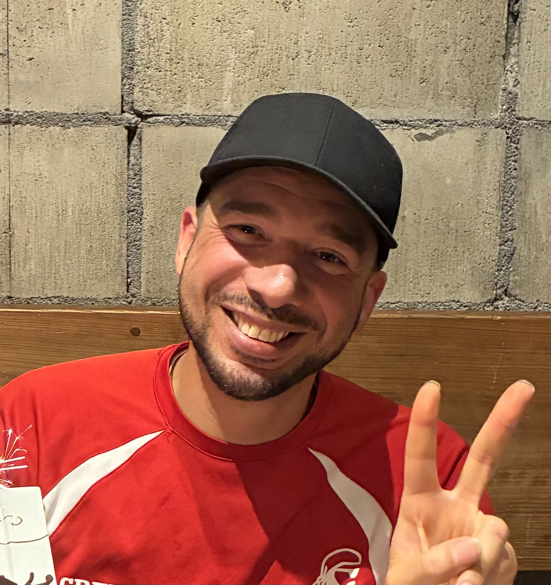

重松テックは、複数の業界の現場で実際に困っている人たちの話を聞き、ソフトウェアとハードウェアで解決策を作っています。派手な機能ではなく、毎日使える道具を。
毎朝1〜2時間の手動配車を、AIが10秒で完了。車両×貨物マッチング、危険物判定、ドライバーモバイル、リアルタイム同期。日本の運送会社のために設計。
5段階の構造化された日本語学習。AIが生成する問題、XP・ストリーク機能、習熟度に応じた復習。Duolingoを超える、本気の学習体験。
故人の声と記憶を保存し、家族が対話できる小型AI装置。仏壇文化と現代技術の融合。有田焼・八女提灯職人との連携も検討中。
複数車両の整備記録・消耗品管理。グランツーリスモ風UIで、作業者が使いたくなる設計。軽自動車から大型トラックまで対応。
日本の渓流・管理釣り場向け。ハッチカレンダー、キャスティング教材、テンカラ解説、AI毛鉤選択。英語・日本語の完全バイリンガル。
深海の美学をテーマにしたビーチウェアブランド。アジア太平洋地域に向けた段階的な展開を計画中。ソフトウェアとハードウェアだけが技術ではない。
代表自身がトラックドライバーとして日々JR・港湾コンテナ・危険物タンクを運んでいます。DispatchOSは、自分の配車表を改善するために書かれた最初の一行から生まれました。
速く作ることよりも、正しく作ること。バグ、UI、日本語、すべての細部を大切にします。お客様のデータを預かる以上、信頼に値する品質が必要です。
九州エリアの企業様には、無料の訪問セットアップを提供します。地元の仏壇職人、焼き物職人、技術者との協働で、新しい日本の道具を作ります。

プエルトリコ出身。5カ国で働き、船長、カヤックインストラクター、英語教師、足場職人、マルチメディアプロデューサー、そして今はトラック運転手。
佐賀県鳥栖市在住。筑後運送で日々JRコンテナ・危険物タンクを運びながら、夜にコードを書いています。
略歴を見る / Full biography →日本語でのクライアント対応・営業・マーケティングを担当。九州エリアの運送会社様との窓口として、丁寧なサポートを提供します。
お問い合わせは日本語でお気軽にどうぞ。
saki@shigematsutech.com →